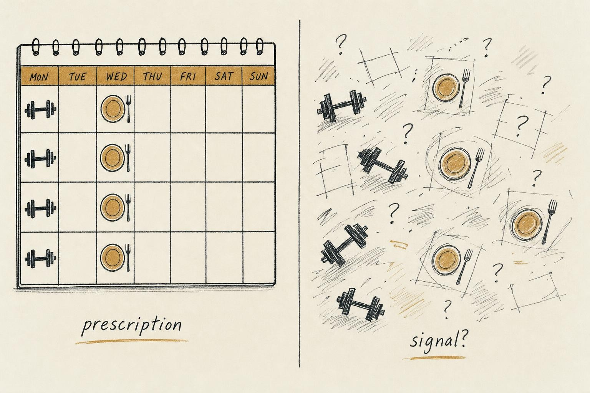
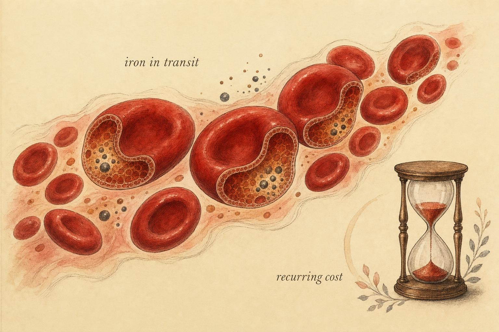

Signal Versus Noise: The Cycle, the Barbell, and the Plate
Grading the cycle-syncing industry honestly, and finding the parts that actually hold.
Open any fitness app built in the last few years and there is a good chance it will offer to tell you when to lift heavy, when to back off, when to eat more carbohydrate, and when to protect your recovery, all keyed to the day of your menstrual cycle. The promise is seductive because it sounds like precision. It sounds like science finally taking female physiology seriously instead of treating a woman as a smaller man. And it arrives with the confidence of a settled field.
Here is the uncomfortable thing this chapter asks you to sit with: much of that confidence is manufactured. When you actually open the studies underneath the marketing, you find small samples, cycle phases guessed at rather than measured, confounders left uncontrolled, and results that contradict each other from one paper to the next. This is the chapter where our honest-grading commitment has to do its hardest work, because grading honestly here means telling you that a large and profitable industry is selling more certainty than the evidence can buy.
What "cycle syncing" actually claims
Let us name the claim precisely, because vague claims are impossible to grade. The strong version of phase-based prescription holds that you should change what you do based on cycle phase: lift heavier and chase adaptation in the follicular phase when estrogen is rising, then deload, switch to lighter work, or prioritize recovery in the luteal phase when progesterone dominates. Some versions extend this to nutrition, prescribing different macronutrient targets or calorie levels by phase. The underlying logic is that the sex hormones estrogen and progesterone swing predictably across roughly a month, and that these swings must therefore move the needle on strength, power, hypertrophy, and recovery enough to justify rewriting your program.
The logic is not absurd. Estrogen and progesterone do have plausible mechanistic effects on muscle, connective tissue, substrate use, and the central nervous system. The question is never whether an effect could exist in theory. The question is whether the effect is large enough, consistent enough, and well enough measured to change what a real person should do on a Tuesday. That is a much higher bar, and it is the bar the evidence has to clear.

The gap between how confident phase-based advice looks and how firm its evidence actually is." data-image-idx="0" style="display:block;max-width:100%;max-height:75vh;height:auto;width:auto;margin:0 auto;cursor:pointer;">The measurement problem underneath everything
Before we look at outcomes, we have to look at how researchers even know which phase a participant was in. This sounds like a technicality. It is actually the crack that runs through the whole foundation. A review of cycle-verification methods in exercise studies published between 2008 and 2018 found that only 44 percent of studies actually measured estrogen and progesterone in the blood (Janse de Jonge et al., 2019). The rest relied on counting calendar days, which assumes a textbook cycle that many people simply do not have.
Why does this matter so much? Because a cycle can look regular on a calendar and still be anovulatory, meaning no egg was released and progesterone never rose the way the model assumes. Or it can have a short, inadequate luteal phase. If you sort participants into a "luteal" group by calendar date and some of them never actually entered a proper luteal hormonal state, you have blended two different physiologies into one bucket and called it data. Janse de Jonge and colleagues recommend a three-method verification approach: calendar tracking, plus testing for the luteinizing hormone surge that precedes ovulation, plus a blood measurement of the hormones themselves. Very few studies do all three. Most do the weakest one.
Reading the evidence plainly
Now the outcomes. Start with performance broadly. A large systematic review and Bayesian meta-analysis of cycle phase and exercise performance in regularly menstruating women concluded that performance might be trivially reduced in the early follicular phase compared with other phases (McNulty et al., 2020). Read that carefully. The word is "might," the effect is "trivial," and the authors state directly that the evidence base is insufficient to generate exercise guidelines for women. That is the responsible reading of the most-cited meta-analysis in this space: a possible tiny effect, and an explicit refusal to prescribe from it.
Narrow to strength and resistance training, where phase-based lifting advice concentrates. An umbrella review, which is a review of other reviews and meta-analyses, examined the whole body of work on cycle phase and resistance exercise (Colenso-Semple et al., 2023). Its verdict was blunt: the evidence is scant, low in quality, and largely inconsistent. It found no persuasive case that short-term hormonal fluctuations appreciably influence either acute strength performance or the longer-term adaptations you actually train for, and it documented a pervasive pattern of poor and inconsistent methods across the literature. In other words, the highest-level synthesis available says the strong claim is not supported.
So why does anyone still believe it?
Because the literature genuinely contradicts itself, and you can find a paper for almost any position. A 2024 systematic review and meta-analysis of 22 studies covering 433 participants reported small-to-medium effects favouring the late follicular and ovulation phases for isometric and isokinetic strength, with only small effects for dynamic strength (Niering et al., 2024). Taken alone, that sounds like support for phasing. But the same authors acknowledge their pool is small and heterogeneous, and their finding sits in direct tension with the Colenso-Semple umbrella review. This is not a case where one side is lying. It is a case where the underlying studies are individually weak enough that pooling them different ways produces different answers. That instability is itself the finding.
The deepest diagnosis comes from a methodological working guide for research on women in sport and exercise science (Elliott-Sale et al., 2021). Its authors document that the great majority of high-quality sport science data still come from male-only studies, and that the field has lacked agreed standards for female-specific variables such as cycle phase verification, hormonal contraceptive use, and reproductive changes across the lifespan. The result is an evidence base that is not merely thin but structurally unreliable, one that cannot yet support confident guidelines for female exercisers. When the tool that measures the world is miscalibrated, you do not fix it by collecting more measurements with the same tool.
It is premature to state that short-term hormonal fluctuations appreciably influence acute performance or longer-term adaptations to resistance exercise training.
Paraphrasing the conclusion of Colenso-Semple et al. (2023)
Notice what the honest verdict is and is not. It is not "the cycle does nothing." It is "the strong, confident, calendar-driven prescription outruns the data, badly." Those are very different statements, and keeping them distinct is the whole discipline of this chapter.
The honest posture: load-and-recovery mindfulness
If calendar prescription is not supported, what is the defensible stance? The course calls it load-and-recovery mindfulness. The idea is simple and it respects both the evidence and your own experience. You do not rewrite your movements by phase. You stay attentive to the signals that actually predict how a session will go: energy, sleep quality, mood, motivation, joint comfort, and perceived readiness. When those signals say you are ready, you push. When they say you are flat, you adjust the session in front of you. This is autoregulation, and it is what good training has always done. It simply does not need a calendar to work.
The distinction is worth making sharp because it changes what you notice. A phase prescription tells you in advance that day 22 will be a bad day, which can become a small self-fulfilling prophecy or an excuse waiting to be used. Load-and-recovery mindfulness makes no prediction. It asks you to read today's actual state and respond to it. If your luteal phase reliably brings poorer sleep and lower drive, you will feel that and adjust, and you will have learned something true about your own body rather than borrowing a claim from a shaky literature. Some people do notice real, repeatable patterns across their cycle. The honest move is to treat those as personal data worth respecting, not as a universal law worth prescribing.
The one thread that is not autoregulation: recognize and refer
Everything above is about ordinary variation in a healthy, regularly menstruating body. There is one situation where "read your readiness and adjust" is not enough, and it is important to name the boundary clearly. If menstruation stops for months in someone who is not pregnant and not postpartum and not in menopause, that is amenorrhea, and it is not a training tweak spot to push through. It can be a sign of Relative Energy Deficiency in Sport, a state in which the body is not getting enough energy to cover both training and basic physiological function, with downstream effects on hormones, bone, and much else.
Your job as an educated observer is to recognize the pattern, not to diagnose it and certainly not to treat it. A missing period across several months, alongside persistent fatigue, frequent injury, or a very restricted intake, is a signal that warrants evaluation by a qualified clinician. That is the entire scope: notice, take it seriously, and understand that it may need professional care. This chapter, and this course, stops firmly at that line. The same firm boundary applies to anything involving hormonal contraception, the interpretation of amenorrhea, and the postpartum period. Those are clinical territory, full stop. Education can help you ask better questions; it cannot replace the person qualified to answer them.
Where the ground is firmer: iron and the bleed
Having spent the first half of this chapter deflating overclaims, honesty now cuts the other way. There is a part of the cycle-and-lifestyle story that rests on much firmer ground, and it deserves to be taken seriously precisely because we were willing to reject the weak parts. That part is iron.
The logic here is not statistical hairsplitting; it is basic accounting. Menstrual bleeding removes blood, blood contains iron, and this happens month after month for decades. That recurring loss is why iron deficiency is substantially more common in female athletes than in male athletes, and the difference is largely attributable to menstruation during the premenopausal years (Badenhorst et al., 2021). Iron is not a boutique concern. It sits at the center of oxygen transport, and low iron status can quietly drag down energy and performance well before it becomes a diagnosable anemia.

Menstrual iron loss is small each month but repeats for years, which is what makes it worth understanding." data-image-idx="1" style="display:block;max-width:100%;max-height:75vh;height:auto;width:auto;margin:0 auto;cursor:pointer;">A recent exploratory longitudinal study followed regularly menstruating female football players and measured iron and blood-production markers across the cycle (Nolte et al., 2025). It found that menstrual blood loss was significantly associated with lower ferritin, the storage form of iron, and with increased production of new red blood cells, evidence that menstruation is a direct physiological trigger for the body to adapt its iron handling. The same paper made a telling observation about the field itself: 65 percent of iron supplementation studies fail even to report participants' cycle phase or status. Once again the measurement culture is part of the problem, but the underlying signal, that the bleed costs iron and the body responds, is real.
How to hold this without overstating it
Here is the careful framing. The goal is understanding and awareness, not a supplementation protocol. Knowing that recurring menstrual loss is a genuine iron cost lets you make sense of unexplained fatigue, understand why iron status is worth monitoring, and ask a clinician the right question at the right time. Badenhorst and colleagues note that for people with a history of iron deficiency, periodic screening makes sense, on the order of a few times a year during heavy training. But screening, interpretation, and any decision to supplement are clinical acts. Iron is not a harmless nutrient to megadose on a hunch; too much carries its own risks. So the mature stance is: take the cost seriously, stay aware, get proper testing when it is warranted, and leave the treatment decision to a professional who can see your actual numbers.
Energy and appetite: real experience, unsettled numbers
The last piece sits between the firm iron ground and the shaky training ground. Many people report that appetite and energy intake shift across the cycle, often feeling hungrier and eating more in the luteal phase and somewhat less around the follicular phase. Is this real? The first narrative review to synthesize the literature on dietary energy intake across cycle phases found that intake does appear lower in the follicular phase and higher in the luteal phase, with the sharpest dip around ovulation (Rogan & Black, 2022). So the direction of the pattern has support.
But the same review is candid that the magnitude is not yet clearly quantifiable and that the evidence base has large gaps and methodological limits. This is the right place to practice the chapter's core skill. The lived experience of appetite change is reported often enough, and consistently enough in direction, to take seriously. The established mechanism and precise magnitude are not settled. Both statements are true at once, and mature reasoning holds them together rather than collapsing into either "it is all in your head" or "your body demands exactly 300 extra calories on day 24."
What does that mean in practice? It means that if you notice a reliable uptick in hunger in the back half of your cycle, you can trust your own observation and respond to it flexibly, without needing a rigid phase-based meal plan to authorize it. Eating a bit more when genuinely hungrier is not a diet failure; it may be a sensible response to a real fluctuation. The honest posture toward appetite is the same as toward training: notice your own signal, respect it, and do not dress it up as a precise scientific law it has not earned.
Energy intake appears lower in the follicular phase and higher in the luteal phase, but the magnitude of these fluctuations is not yet clearly quantifiable.
Paraphrasing Rogan and Black (2022)
A decision frame you can carry
When the next cycle-based training or nutrition claim reaches you, and it will, run it through four questions. First, how was cycle phase determined, by blood measurement or merely by calendar? Second, how many participants, and were regularly ovulating cycles actually confirmed? Third, are the results consistent with the broader body of work, or do they contradict the higher-level reviews? Fourth, and most important, is the effect large enough to change what a real person should do, or is it a statistically detectable but trivial blip? A claim that survives all four is rare. Most collapse at the first.
That skepticism is not cynicism. It is respect. Female physiology deserves rigorous study, not a rushed marketing story that borrows the authority of science while skipping its discipline. And a note of humility belongs here too: this course distills research, but the research itself is incomplete, and the lived and clinical expertise of women and their care providers fills gaps the papers cannot. The most honest thing an educator can do is tell you where the map is firm, where it is blank, and where someone has drawn confident roads that were never actually surveyed.
Key Takeaways
- The strong version of phase-based training prescription is not well supported; the highest-level review found scant, low-quality, and contradictory evidence, and performance meta-analyses find at most trivial effects (Colenso-Semple et al., 2023; McNulty et al., 2020).
- The literature's core flaw is measurement: fewer than half of studies verify cycle phase with actual hormone testing, which blurs any real effect and destabilizes conclusions (Janse de Jonge et al., 2019; Elliott-Sale et al., 2021).
- Load-and-recovery mindfulness, reading today's actual energy, sleep, and readiness, is a more honest stance than rewriting your movements by calendar.
- Iron is a genuine, recurring cost of menstruation and a stronger claim than phase-based lifting; the posture is understanding, awareness, and proper testing when warranted, never self-directed supplementation (Badenhorst et al., 2021; Nolte et al., 2025).
- Appetite and energy intake shifts across phases are credible as lived experience with an established direction but unsettled magnitude (Rogan & Black, 2022).
- Recognize and refer: prolonged absence of menstruation may signal amenorrhea or Relative Energy Deficiency in Sport and warrants professional evaluation. Contraception, amenorrhea, and postpartum questions are clinical territory.
Next we carry this evidence-graded posture into the perimenopausal transition, where the signal changes character entirely: the cycle itself becomes irregular, and the question shifts from reading a predictable rhythm to interpreting a system in flux. The same discipline applies, but the terrain is new.
References
Badenhorst, C. E., Goto, K., O'Brien, W. J., & Sims, S. (2021). Iron status in athletic females, a shift in perspective on an old paradigm. Journal of Sports Sciences, 39(14), 1565–1575. https://doi.org/10.1080/02640414.2021.1885782
Colenso-Semple, L. M., D'Souza, A. C., Elliott-Sale, K. J., & Phillips, S. M. (2023). Current evidence shows no influence of women's menstrual cycle phase on acute strength performance or adaptations to resistance exercise training. Frontiers in Sports and Active Living, 5, 1054542. https://doi.org/10.3389/fspor.2023.1054542
Elliott-Sale, K. J., Minahan, C. L., Janse de Jonge, X. A. K., Ackerman, K. E., Sipilä, S., Constantini, N. W., Lebrun, C. M., & Hackney, A. C. (2021). Methodological considerations for studies in sport and exercise science with women as participants: A working guide for standards of practice for research on women. Sports Medicine, 51(5), 843–861. https://doi.org/10.1007/s40279-021-01435-8
Janse de Jonge, X., Thompson, B., & Han, A. (2019). Methodological recommendations for menstrual cycle research in sports and exercise. Medicine & Science in Sports & Exercise, 51(12), 2610–2617. https://doi.org/10.1249/mss.0000000000002073
McNulty, K. L., Elliott-Sale, K. J., Dolan, E., Swinton, P. A., Ansdell, P., Goodall, S., Thomas, K., & Hicks, K. M. (2020). The effects of menstrual cycle phase on exercise performance in eumenorrheic women: A systematic review and meta-analysis. Sports Medicine, 50(10), 1813–1827. https://doi.org/10.1007/s40279-020-01319-3
Niering, M., Wolf-Belala, N., Seifert, J., Tovar, O., Coldewey, J., Kuranda, J., & Muehlbauer, T. (2024). The influence of menstrual cycle phases on maximal strength performance in healthy female adults: A systematic review with meta-analysis. Sports, 12(1), 31. https://doi.org/10.3390/sports12010031
Nolte, S., Krüger, K., Ringseis, R., & Mooren, F. C. (2025). Menstrual blood loss as an initial trigger for adaptation of iron metabolism in eumenorrheic female athletes: An exploratory study. Physiological Reports, 13(16), e70522. https://doi.org/10.14814/phy2.70522
Rogan, M. M., & Black, K. E. (2022). Dietary energy intake across the menstrual cycle: A narrative review. Nutrition Reviews, 81(7), 869–886. https://doi.org/10.1093/nutrit/nuac094